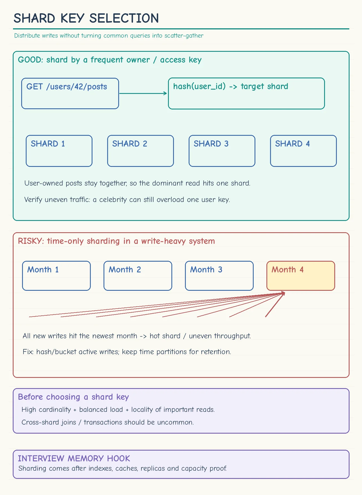
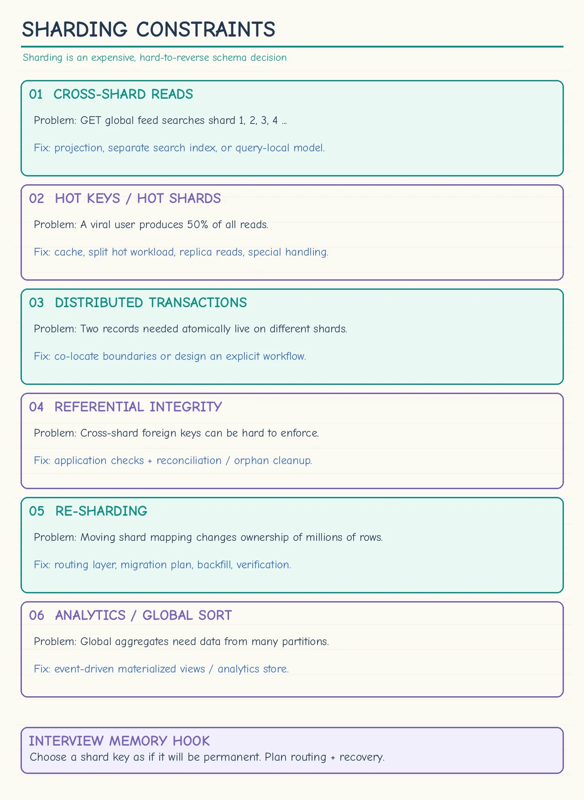

Topic · Data Modeling
Sharding and Shard Keys
Shard only when one well-tuned database can't keep up - and pick a key that keeps the dominant query and transaction on one shard.
Cheat sheets
Tap for full size.




Quick Revision
- Shard only after capacity math proves one DB + replicas is not enough.
- Shard key = dominant access pattern:
user_idfor user-scoped,tenant_idfor isolated tenants. - Hashing the key spreads load but makes global range queries harder.
- Avoid time-only sharding for write-heavy current data - the newest shard gets hot.
- Avoid cross-shard queries and transactions; co-locate data for one invariant.
- Treat the shard key as nearly permanent.
Key ideas
- Before sharding - query tuning, indexes, cache, replicas, partitioning, connection pooling, vertical scaling.
- Good key - high cardinality, even storage and traffic, keeps the dominant query and transaction boundary on one shard.
- Time ranges - fine for archival, retention, analytics; dangerous when all active writes hit the latest range.
- Cross-shard cost - fan-out adds network work, tail latency, merge/sort cost, and partial failures.
- Permanence - the key shapes routing, locality, transactions, joins, indexes, resharding, and every future query.
- Global queries - with
user_idsharding, global feed/search need precomputation or a separate index.
Hash and ring basics: Hashing, Consistent Hashing.
Trade-offs
| Choice | Benefit | Cost / risk |
|---|---|---|
| Hash sharding | Even distribution, predictable routing | Poor range scans, expensive global queries |
| Range/time sharding | Efficient bounded ranges and retention | Skew, hot newest partition |
Failure modes
- Sharding before proving a bottleneck - tune, cache hot reads, add replicas, do capacity math.
- Low-cardinality key - choose high cardinality with even traffic.
- Sharding only by current time - hash or bucket an extra dimension.
- Normal requests fan out to every shard - co-locate, precompute, or keep a separate query index.
- One invariant split across shards - redesign the boundary or accept saga/2PC complexity.
Interview practice
Answer aloud, then reveal.
When should the database be sharded?
After query tuning, indexes, cache, replicas, partitioning, pooling, and vertical scaling are insufficient according to capacity measurements.
How do you choose a shard key?
High cardinality, even storage and traffic, and the dominant query + transaction boundary stays on one shard.